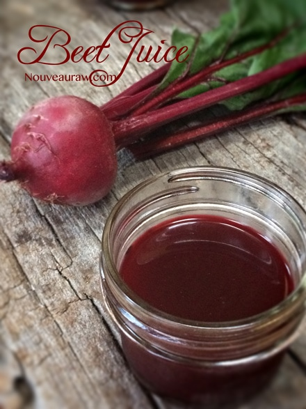
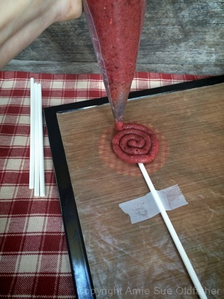

Strawberry Sucker Chews

~ raw, vegan, gluten-free, nut-free ~
Soft and chewy suckers… sounds a little loopy doesn’t it? When trying to provide healthy treats for little ones, I don’t think they have to go without. There are so many wonderful sweets that can be made.
The textures may be different from what you and I have grown up with but they don’t have to know that, do they? Who says that suckers have to be made of pure sugar that has been boiled and cooled to a solid state?
Just because people kept copying the concept over and over throughout the years doesn’t mean that times can’t change. We can set the stage for the new up and coming generation!
Essentially, the texture is like a really thick fruit leather on a stick… why yes, I AM trying to reinvent the sucker. Let’s be trendsetters. Because Bob and I are in the retail book, music and electronic business we often have lengthy talks about where we see things going.
Books and music are changing more and more to electronic forms. The Nook, iPad, Kindle, iTunes, etc. In my lifetime (and a very short one at that :) I have seen 8-tracks, records, cassette tapes, and CD’s. These days, most music is sold digitally.
Those are a lot of changes in a relatively short period of history. I have friends with 10 years old kiddos who have never owned a CD… they get all their music from iTunes or in some other digital form. My point in sharing this is… the hard, solid sugar boiled sucker has had its time. “Candy” doesn’t have to be an evil thing that we struggle to keep away from children. It can be healthy, guilt free and even taste better! Enjoy and have a blessed day in the kitchen. amie sue
Ingredients:
Preparation:
- To create beet juice, wash the beetroots well and rough chop into sizes that will fit in the juicer chute. Juice. If you don’t have a juicer you can rough chop some beetroots and blend them with a touch of water in a high-powered blender. Then place in a mesh/nut bag and squeeze the juice from the bag. A little labor intensive, but it can be done.
- In the food processor, fitted with the “S” blade, process the date paste, beet juice, and strawberry extract or freeze-dried strawberries until everything is well mixed.
- Place the batter in a piping bag fitted with a plain circular tip. Mine was about 1/4″ in diameter.
- You can do the spiral motion freehand, or you can place a template under the teflex sheet to make all of the suckers the same diameter. I used a small jar lid, no need to make it complicated. :) See below for instructions.
- Dehydrate at 115 degrees (F) for 24 hours. Allow cooling before storing in an airtight container. I recommend placing a piece of wax paper in between the suckers if you layer them. Or you can place them in individual sucker bags that most art and craft stores carry. I left mine on the counter in a glass (as shown in picture) so Bob could snag one when desired.
Beet juice tip, click here.

Piping Process:

- Place a template under the teflex sheet that comes with the dehydrator. If you don’t have one, you can use parchment paper. You can print a piece of paper with dark circles on it for a template. I used a small mason jar lid. :)
- Place the sucker stick in the position to where part of the stick will be about 1/2 way into the sucker form. This will help it be sturdy.
- In the photo I have my stick taped down. This isn’t necessary. I had to do this for picture taking purposes since I was piping with one hand and trying to take a picture with the other hand. If you are not taking a picture of this process (hehe), just hold the stick in place with one hand and pipe with the other. Do whatever is most comfortable.
- Before you start piping, make sure that you have worked out all air bubbles from the bag. Air bubbles will cause a break in the piping process.
- Hold the piping bag straight up and down and about 1/4″ off the teflex sheet while you are piping. Use firm and steady pressure throughout the complete process.
- Start in the center, right at the tip of the stick. Go around and around until you have made the sucker the diameter that you desire.
- Follow directions listed above for dehydrating.
© AmieSue.com